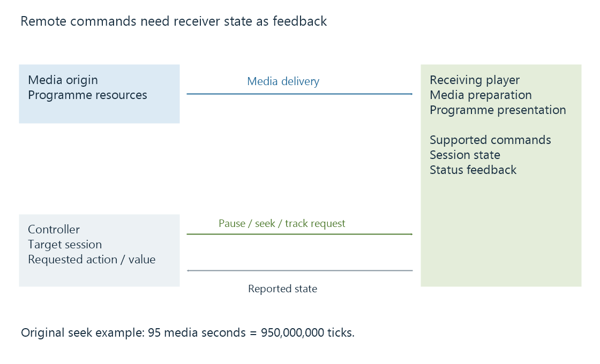

Playback remote control and reported session state
Playback remote control sends commands to a selected playback session while reported state and actual media presentation establish what the receiving player did.
Playback remote control lets one application request actions from another playback session. Play, pause, seek, track selection and volume operate on that receiving player's supported state.
The controller can remain outside the media-delivery path. A pause command can travel through a server while movie bytes travel from the media origin directly to the receiver.
Commands and status form a feedback path

| Stage | What it establishes |
|---|---|
| Controller forms a command | Intended action and target session |
| Command reaches the supported handler | Receipt at that stage |
| Player changes state | Receiver-side action |
| Updated state is reported | Feedback available to the controller |
| Programme presentation changes | The user's observed result |
An HTTP response acknowledging a request does not, alone, describe the picture currently on screen. A receiver can need more media preparation before a requested seek becomes visible.
Target the session that can accept the action
Emby's remote-control API documentation describes selecting controllable sessions and supported commands. A client can filter sessions by the relevant user's control context.
A discovered receiver and a currently controllable playback session are therefore different concepts. Sessions can end or be replaced; a command for an old session need not control the new one.
Track selection also belongs to a particular source/session context. An audio-stream number from one source should not be assumed to identify the same language in another.
Absolute actions and toggles have different intent
Consider an original state example starting in Playing:
| Intent applied twice | Result in the simplified state model |
|---|---|
| Pause | Paused, then still Paused |
| Toggle play/pause | Paused, then Playing |
The table models requested state meanings, not the retry contract of a particular HTTP API. It explains why a controller that repeats a toggle after uncertain feedback can undo the action it wanted.
A useful user interface reconciles intended state with reported state. A delayed status message also needs its session and ordering context so it does not overwrite a newer observation incorrectly.
Seek coordinates need their unit
Emby exposes seek positions in ticks for the relevant remote-control operation. One second is ten million ticks.
For an original request targeting programme second 95:
95 × 10,000,000 = 950,000,000 ticks
That value is a media-time destination. It is not an HTTP byte offset or a wall-clock timestamp. The receiving player still resolves the seek through its media and decoding path.
See Also
- Casting and screen mirroring: where playback happens
- DLNA media playback and UPnP AV roles
- Google Cast and receiver-side media playback
- Controller and receiver connectivity
- Resume positions and playback timelines